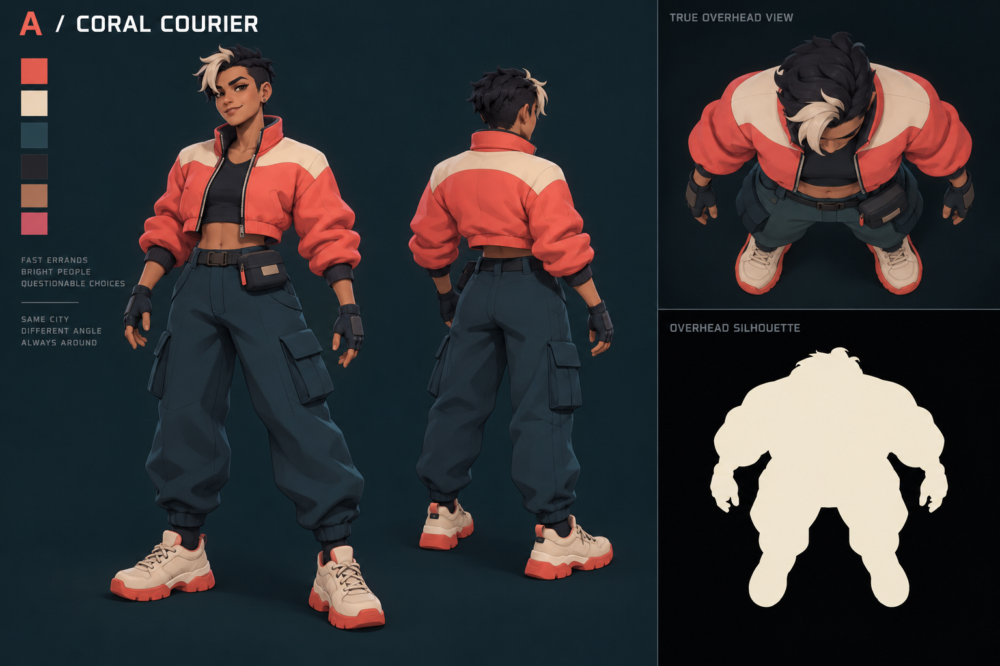
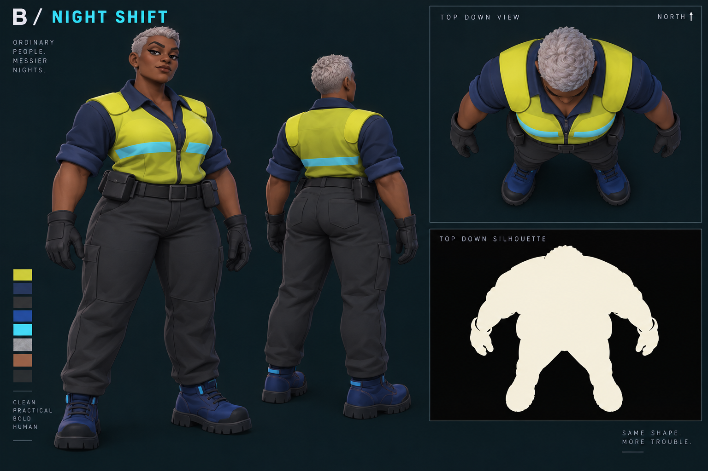
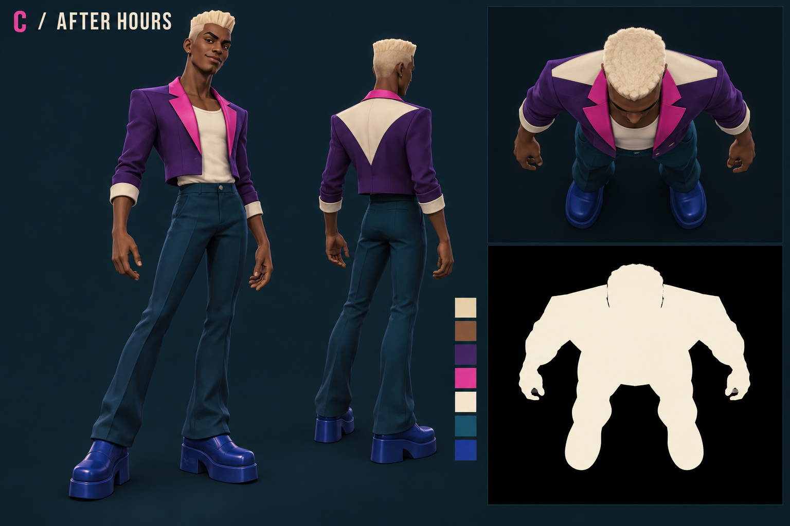

A · Coral Courier

Concept selection · 9 October 2026 · Brief and self-review · Exact tool prompts and provenance
Recommended: A — Coral Courier. A broad ivory shoulder band and pale forelock support overhead recognition; a short bomber keeps the weapon and locomotion poses practical. Owner selection is pending.
Each sheet includes useful three-quarter views and enlarged overhead/silhouette studies. The overhead figures face down the page, despite the image labels/prompt. These are generated art references; no Godot camera, movement or network checks ran.
Rounded shoulders, ivory arch, pale forelock. Simplify folds and hair; distinguish from coral pedestrians.
Broad workwear mass, chartreuse shoulder blocks, silver head. Strongest color contrast; service NPC association.
Slim fashion silhouette, ivory triangle, platform shoes. Distinct attitude; night contrast and motion need care.
Small crops at 16, 24 and 32 pixels wide test loss of detail only. Background padding is included, so apparent subject widths are approximate. Browser scaling is not a measured 1280 × 800 capture. Exact camera review follows an approved source-linked blockout.


